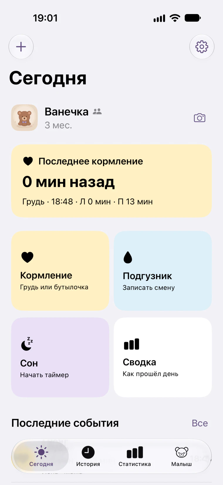
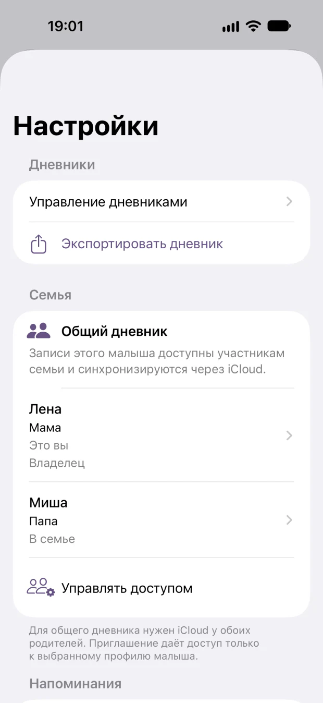
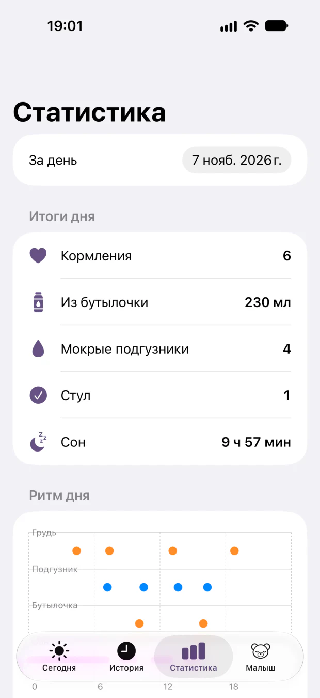
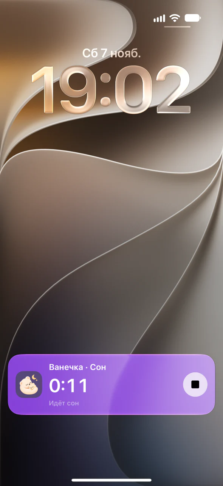
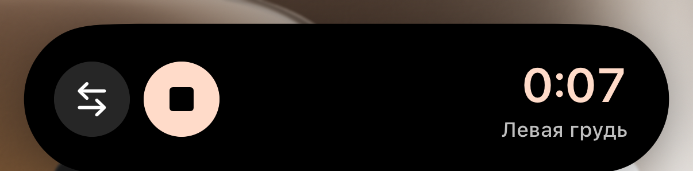
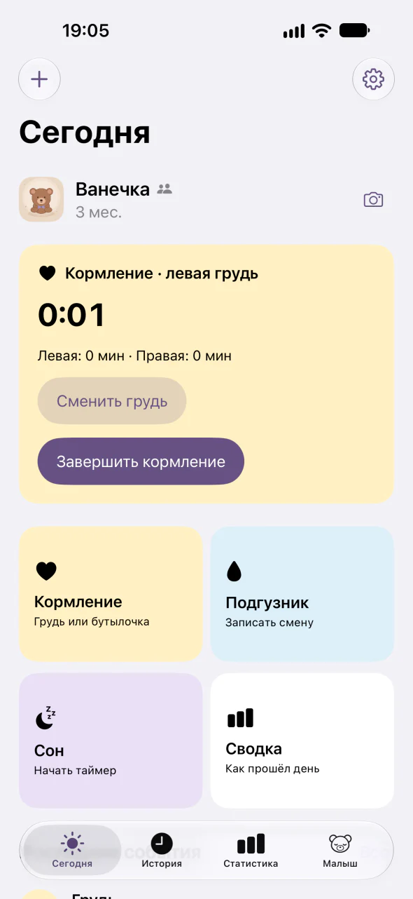
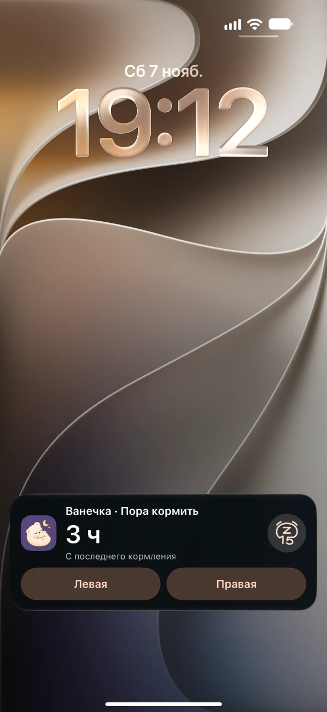
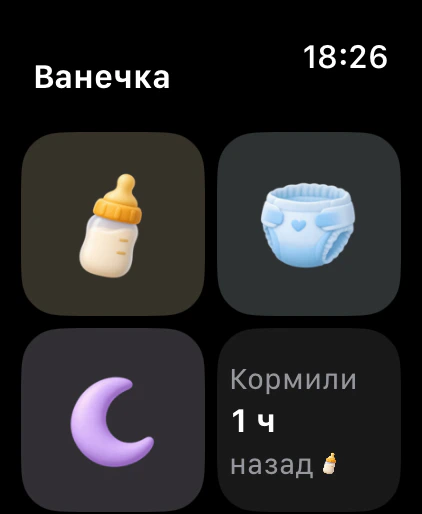
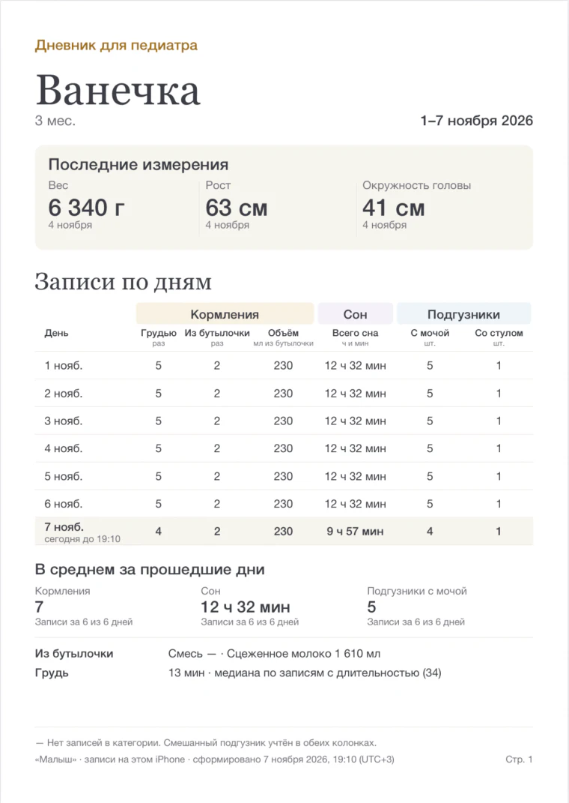

Один дневник для двух родителей
«Малыш» — дневник младенца на первый год. Отмечайте кормления, сон и подгузники на iPhone и Apple Watch. С iCloud записи видны обоим родителям.
Как вести вместеГотовится к выходу в App Store


Личный или общий
Личный дневник хранится на iPhone и доступен без сети. Для общего дневника включите синхронизацию через iCloud и пригласите близкого. Ему откроются записи и фотографии выбранного дневника.
Как отправить приглашениеКак прошёл день
Вспомните, когда малыш ел, сколько спал и как часто меняли подгузник.
- Кормления, сон и подгузники
- Запускайте таймер груди и меняйте сторону. Для бутылочки укажите, что было в ней и сколько малыш выпил. Отмечайте сон и смены подгузников.
- История и статистика
- Просматривайте записи за нужный день и итоги кормлений, сна и подгузников.
- Измерения и фотографии
- Записывайте вес, рост и окружность головы, смотрите изменения на графиках и добавляйте снимки в альбом ребёнка.

Таймер на виду
Следите за кормлением или сном на экране блокировки и в Dynamic Island на совместимом iPhone.
- Быстрые действия
- Переключайте сторону кормления и завершайте таймер, пока приложение свёрнуто.



Пора кормить
Включите напоминания и выберите интервал. iPhone запланирует напоминание после завершённого кормления.
Из Live Activity можно начать кормление грудью или отложить напоминание на 15 минут. Когда Live Activities недоступны, «Малыш» использует локальное уведомление, если вы разрешили их в iOS.
Как настроить напоминания

Записи с запястья
Запускайте таймер сна или кормления и отмечайте подгузники на Apple Watch.
После первой синхронизации часы могут сохранять записи без связи с телефоном. Они передадутся в дневник, когда часы снова подключатся к iPhone.
PDF-отчёт в разработке
Готовим отдельный отчёт для приёма у педиатра. В примере собраны последние измерения и сводка кормлений, сна и подгузников за выбранный период.

Помощь с дневником
iOS 27.0 и новее · watchOS 26.0 и новее
Открыть поддержку